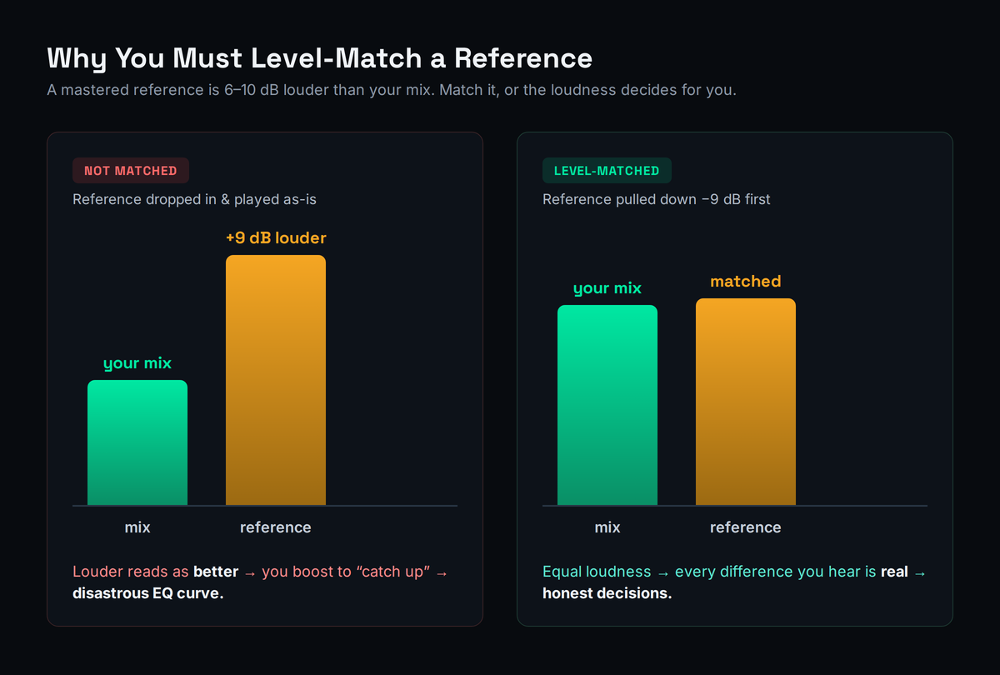
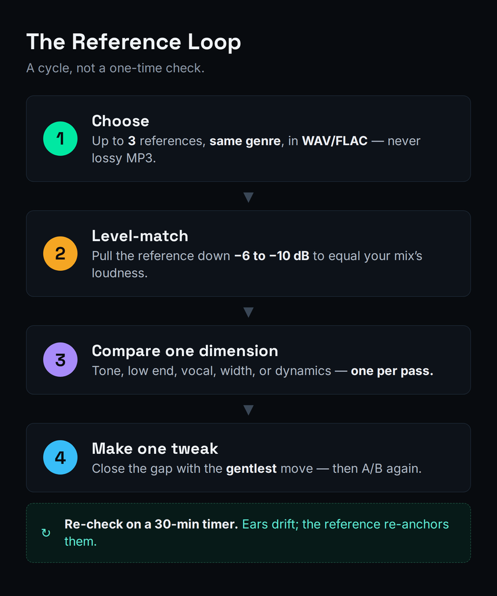
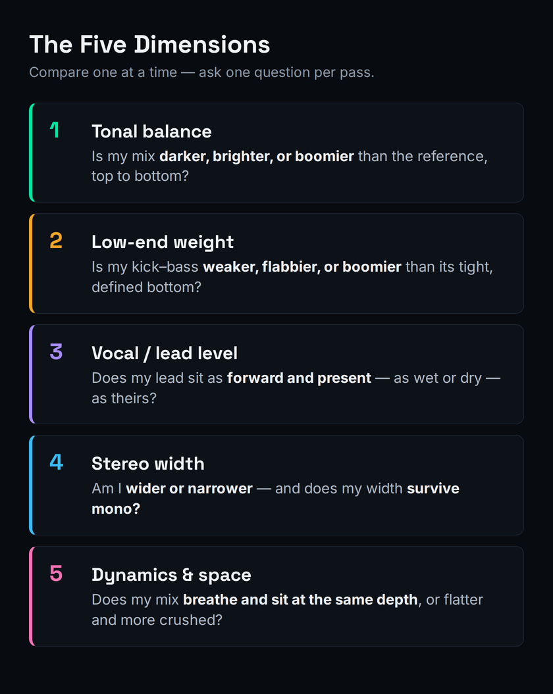

Almost every self-taught producer hits the same wall. The mix sounds great in the room — big, warm, exciting — and then it falls apart everywhere else: thin in the car, muddy on the phone, weirdly quiet next to a commercial track. The fix is not a better plugin or a better room. It is the single most leveraged habit in all of mixing, and most people either skip it or do it wrong: working with a reference track. A reference is a professionally finished song you compare your mix against as you work, so you stop mixing from memory and start mixing against a known target. This guide teaches the method that actually makes it work — and the one rule that, skipped, quietly sabotages everyone who tries.
That rule is level-matching, and it is the reason this article is not just another ad for a referencing plugin. A finished, mastered song is roughly 6 to 10 dB louder than your unmastered mix, and your brain hears “louder” as “better, fuller, clearer.” So if you drop a reference into your session and hit play without matching the volume, the reference wins every comparison by default — not because it is better, but because it is louder — and you make EQ and balance decisions chasing a ghost. Get the loudness honest first and a reference becomes the most reliable feedback you have. Get it wrong and a reference becomes an active liability. Everything below is built on that one idea.
A reference track is a professionally finished song you A/B your mix against while you work. The rule that makes it work: level-match the reference down to your quieter mix before comparing — usually pulling the mastered reference down 6–10 dB — otherwise loudness bias makes it always “win” and you make bad calls. Then compare one dimension at a time (tonal balance, low-end weight, vocal level, stereo width, dynamics), keep your references to three max in the same genre, and re-listen on a timer because your ears drift. You don’t need a paid plugin: a LUFS meter and your ears do the job, or run a measured browser A/B in our Mix Fingerprint tool for free.
What a Reference Track Is — and Why It’s the Highest-Leverage Habit in Mixing
Mixing without a reference is like painting a landscape from memory. You think you know what green looks like, what the sky does at the horizon, how light falls — until you set your painting next to a photograph of the actual scene and every drifted assumption snaps into focus. A reference track is that photograph. It is a commercial release in the same genre as your song that you load into your session and switch to constantly, so that instead of asking the impossible question — “is this good?” — you ask a precise and answerable one: “how is this different from a track I already know works?”
The reason this matters so much is that human hearing is relative, not absolute. You cannot hold the “correct” amount of low end in your head the way you can hold a phone number. Your sense of how much bass, how bright the highs, how loud the vocal “should” be drifts continuously over a session, pulled around by fatigue, by your room, by the last thing you listened to, by simple adaptation. Spend two hours boosting the low-mids a little at a time and your ears will tell you it sounds normal — right up until you play it on another system and discover you built a wall of mud. A reference is the fixed point that stops the drift. It re-anchors your ears to reality every time you switch to it.
This is also why a reference is the cheapest upgrade available to your mixes. Producers spend money chasing the gap between their tracks and commercial ones — new monitors, new plugins, room treatment, a mastering subscription. All of that can help. But the single largest cause of the gap is not gear; it is that the commercial mix was made by someone constantly comparing against a target while you were mixing blind. The discipline costs nothing and closes more of the gap than any purchase. It is the closest thing mixing has to a free lunch, which is exactly why every professional uses references and most beginners don’t. If your mixes sound fine to you but fall apart elsewhere — the classic symptom behind a muddy mix or a thin one — the missing ingredient is almost always a reference you trusted over your own drifting ears.
One clarification before the method, because it trips people up: a reference is not a backing track, a stem you’re remixing, or a song you’re trying to clone. It is a yardstick. You are not copying its arrangement or its melodies; you are measuring your sonics — tonal balance, loudness, width, punch — against a known-good example so your technical decisions have a target. The creative work is still yours. The reference just keeps the engineering honest.
The Principle That Does All the Work: Loudness Bias
Here is the mechanism that separates a reference track that helps from one that quietly wrecks your mix. When two versions of similar audio play back at different volumes, the louder one almost always sounds better — fuller, clearer, more exciting, more “finished” — even when it is objectively worse. This is not a character flaw; it is how human hearing is built. Our ears do not respond to all frequencies equally at all volumes. As level rises, we perceive disproportionately more low end and more high end — the bass and the air bloom — so a louder track sounds richer and wider almost regardless of its actual balance. Psychoacousticians map this with the equal-loudness contours (the Fletcher–Munson curves); you just need the upshot: louder reads as better, and the effect is powerful enough to override your judgment without your noticing.
Now apply that to a reference. The professionally released song you’re comparing against has been mastered, which means it has been compressed and limited up to a competitive loudness — typically somewhere around 6 to 10 dB louder than your unmastered, un-limited mix. (Sonarworks cites roughly 9 dB as a common gap; other engineers put the working range at 6 to 10.) So you drop the reference in, hit play, switch back and forth — and the reference sounds enormous next to your mix. Your instinct says: my mix needs more low end, more highs, more everything. You start boosting to close a gap that was never tonal in the first place. It was a volume gap, and you just “fixed” it by carving disastrous EQ curves into a mix that was actually fine.

It’s worth seeing exactly how this becomes a curve and not just a guess, because that’s what makes it so destructive. The louder reference appears to have more top-end air and more sub weight — that’s the equal-loudness effect — so you reach for a high shelf and a low shelf to “catch up.” Now your mix is brighter and bassier than it should be, but still quieter, so it still sounds smaller, so you push the shelves further. A few iterations of that and you’ve built a smiling EQ curve that scoops the mids and exaggerates the extremes — a mix that sounds hyped and impressive in solo and harsh, scooped, and fragile the moment it’s played at a normal level next to anything else. You didn’t mix badly; you mixed against a rigged comparison, and the rigging baked itself into your EQ.
This is the textbook cause of the “sounds amazing in the studio, falls flat in the car” problem. You weren’t comparing tonal balance; you were comparing volume, lost, and made everything worse while believing you were making it better. The cure is almost insultingly simple and it is non-negotiable: match the loudness before you compare. Pull the reference down until it is perceptually the same volume as your mix, and only then listen for differences. With the volumes matched, every difference you hear is a real difference — in tone, in width, in punch — and now the reference is doing its job instead of sabotaging it.
If you take one thing from this entire guide, take this. The selection tips, the five dimensions, the timer — all of it is useful, but all of it is downstream of level-matching. A perfectly chosen reference compared at the wrong volume is worse than no reference at all, because it gives you false confidence in bad decisions. Skipping the match is the one mistake that turns the highest-leverage habit in mixing into a trap. So before anything else, learn to match.
How to Level-Match a Reference (Three Ways)
There are three ways to match the loudness of your reference to your mix, from the quickest to the most precise. All three work; pick the one that fits your setup and your patience. But two routing rules apply to every method, and getting them wrong undoes the whole exercise.
First: match with a gain or utility plugin (or the reference player’s own volume), never with the channel fader you mix with. If you ride the reference’s level down on the same fader you’re using to balance, you’ll lose track of where your mix levels actually sit. Use a dedicated gain stage. Second: route the reference so it bypasses your master-bus processing. If your mix bus has a limiter, EQ, or glue compressor on it, the reference must not pass through any of it — otherwise you’re comparing your mix against a version of the reference that your own master chain has re-colored, which is meaningless. Drop the reference on a track that feeds the monitor output directly, or use a referencing plugin that auto-bypasses the chain. Most people get a confusing comparison for weeks before discovering their reference was running through their own limiter the whole time.
With routing handled, here are the three matching methods.
1. By ear (fastest, good enough most of the time). Loop a loud section of your mix — usually a chorus — against the same kind of section in the reference, and ride the reference’s gain down until the two feel equally loud. Don’t overthink it; your ear is surprisingly good at matching perceived loudness when you stop comparing tone and only compare volume. If anything, err toward pulling the reference a hair quieter than your mix, because residual loudness bias still favors the louder track, and you’d rather your mix get the benefit of the doubt than the reference.
2. With a LUFS meter (precise, repeatable). Put an integrated-LUFS meter on your mix bus and read its loudness over a representative section; do the same for the reference; then drop the reference’s gain by the difference. In practice that’s usually a cut of 6 to 10 dB on the mastered reference to bring it down to your unmastered mix. LUFS is built to model perceived loudness, so matching integrated LUFS gets you genuinely close, and it’s repeatable across sessions. If you’re fuzzy on what the numbers mean, our explainer on what LUFS is covers it, and the LUFS Target Reference tool lists the streaming targets you’ll be aiming at later anyway.
One pitfall to avoid with the meter method: match perceived loudness, not peak level. Your unmastered mix and a mastered reference can hit similar peaks while being wildly different in perceived loudness, because the master is far more compressed — it’s dense, sitting close to its ceiling constantly, while your mix peaks occasionally and sits much lower the rest of the time. If you match peaks (or worse, normalize both to the same peak), the reference will still sound much louder and you’re back to a biased comparison. Integrated LUFS measures the average perceived loudness over time, which is exactly what you want; a peak meter or a simple normalize-to-0 will mislead you. When in doubt, trust your ear’s loudness match over any peak reading.
3. With a matching tool or plugin (automatic, real-time). Dedicated referencing tools match loudness for you on the fly, so every time you switch, the comparison is already fair. This is the convenience the paid plugins sell, and it’s a real convenience — more on those options at the end. You can also get a measured, level-matched comparison in the browser with nothing to install: our Mix Fingerprint tool analyzes your bounce against a reference and reports the real differences with the loudness already accounted for.

Whichever method you use, remember that matching is not a one-time setup. Every time you switch to the reference, you’re relying on the match still being roughly right, so re-check it if you’ve made big level moves on your mix bus. The goal is permanent: a reference that is always sitting at honest loudness, ready to tell you the truth the moment you A/B.
Choosing Your References: The Selection Checklist
A reference can only be as useful as it is relevant, and the most common selection mistake is comparing your bedroom indie track to a hyper-produced pop master and concluding your mix is broken. It isn’t broken; it’s being measured against the wrong target. A good reference set follows four rules.
Same genre, similar instrumentation and sounds. The whole point is a fair target, so the reference should share your song’s sonic world — comparable arrangement density, similar core sounds, the same broad production aesthetic. A sparse acoustic ballad and a maximalist EDM drop have completely different “correct” tonal balances; comparing across that gap teaches you nothing. Match the genre and you match the expectations your listeners actually carry.
Use WAV or FLAC, never a lossy MP3. Lossy compression throws away high-frequency detail and subtle stereo information — precisely the content you’re trying to match. Referencing against a 128 kbps MP3 means you’re chasing a degraded copy and will mis-set your highs and your width. Pull references from a lossless source (a purchased download, a CD rip, a high-quality stream captured losslessly) so the target is the real thing.
Keep it to three references, maximum, with defined roles. One primary reference that is the closest possible target for the whole song — this is the one you live in. One secondary reference chosen for a single quality you admire and want to study: a vocal tone, a bass weight, a snare crack. And optionally a third for stereo width or sense of space. More than three and you dilute the comparison into noise, ping-ponging between contradictory targets. Three sharp references beat ten vague ones.
Always keep your own rough mix in the rotation. The reference tells you where you’re going; your earlier rough tells you how far you’ve come and whether a “fix” actually improved anything. It’s easy to chase a reference so hard that you make changes that are different without being better. A/B-ing against your own previous version keeps you honest about direction.
A note on sourcing, since this is where good intentions stall. The cleanest references come from music you already own as lossless files, or from buying a single track in WAV/FLAC from a store that sells them — a couple of dollars for a permanent gold standard is the best money you’ll spend on your mixes. If you only have streaming access, capture losslessly rather than referencing a re-encoded preview, and never screen-record a compressed playback and call it a reference. And match the reference to the section when it matters: a song’s verse and chorus can have quite different balances, so when you’re fighting a specific chorus, loop the reference’s chorus, not its intro. The closer you align like-for-like — same genre, same energy, same section — the more trustworthy every comparison becomes.
A practical habit worth building: keep a small, curated library of go-to references organized by genre, so you’re never burning creative momentum hunting for a track mid-session. Pick the records whose mixes you genuinely want yours to live next to, rip them losslessly, and label them by the quality they teach. Over time that library becomes one of the most valuable tools you own — a private set of gold standards you can summon in seconds.
The Five Dimensions — Compare One at a Time
The second great mistake, after skipping the level-match, is trying to compare everything at once. You switch to the reference, feel a vague “mine sounds worse,” and start changing five things in a panic. That way lies chaos. The discipline is to compare one specific dimension per pass, ask one specific question, make one targeted move, then switch back and check. Slow is fast here. There are five dimensions worth isolating, roughly in the order they matter.

1. Tonal / frequency balance. The big-picture question: across lows, mids, and highs, is your mix darker, brighter, or boomier than the reference? This is the master shape of the sound and the thing listeners feel first. A spectrum analyzer makes it visual — a healthy mix tends to slope gently down from lows to highs, and you can literally see where your curve diverges from the reference’s. If you’re not already using one, our guide to using a spectrum analyzer shows how to read the picture, and the Frequency & EQ Reference tool is a quick map of what lives where.
2. Low-end weight. The make-or-break dimension in modern music: how does your kick-and-bass relationship compare? Is your low end weaker, flabbier, or boomier than the reference’s tight, defined bottom? This is where most amateur mixes lose — either too little weight or an undefined rumble — and it’s worth its own dedicated pass. If the reference’s low end is clearly more controlled than yours, the problem is usually carving and mono discipline, not more bass; checking in mono against the reference exposes it fast.
3. Vocal / lead level and placement. Is the lead sitting at the same height in the reference as in your mix — as forward, as present, as wet or dry? Vocals are the element listeners track most closely, and a lead that’s a couple of dB too buried or too loud is one of the most common giveaways of an amateur mix. The reference shows you the genre-appropriate placement instantly.
4. Stereo width. Is your mix as wide, or wider, or narrower than the reference, and where does that width live? Beginners often over-widen everything, which collapses to a weak or phasey signal in mono. Compare width against the reference and confirm it survives mono — the Stereo Field & Mono Checker tool makes a width-and-mono problem obvious in seconds.
5. Dynamics, compression, and depth. Does your mix breathe like the reference, or is it flatter and more crushed — or looser and less controlled? And how does the sense of front-to-back depth compare: are reverbs setting things at a similar distance? Dynamics and space are subtle, which is exactly why a reference is so valuable here: they’re almost impossible to judge in isolation but jump out the moment you A/B.
If you’re wondering which of the five to spend the most time on, it’s the first two. Tonal balance and low-end weight account for the overwhelming majority of why an amateur mix reads as amateur, and they’re also the two a reference exposes most ruthlessly. A buried or overly forward vocal is an easy fix once you hear it; a low end that’s 3 dB too boomy and undefined is the thing that makes a mix sound “homemade” on every system, and it’s nearly invisible without a trusted target to compare against. Spend two passes on tonal balance and low end for every one pass you spend on width. The reference earns its keep on those first two dimensions more than anywhere else.
Work these one at a time, and resist the urge to match every dimension perfectly. The point is to find the meaningful gaps and close those, not to clone the reference. Some differences are your song being itself — which is the next, important caveat.
The Calibration Habit: Reset Your Ears on a Timer
A reference is not just something you check at the end. It is a tool for keeping your ears calibrated throughout a session, and the single most underused way to use one is the calibration habit: start every mixing session by listening to your references first, before you touch a fader. This “sets” your ears to a professional standard — it reminds them, concretely, what a finished record sounds like — so you begin from reality instead of from wherever yesterday’s session left your perception.
Then re-check on a timer. The longer you work, the more your ears adapt to your own mix; what sounded too bright an hour ago now sounds normal, because you’ve acclimated to it. This is ear fatigue and adaptation, and it is relentless — it pulls every long session toward the same drifted, over-processed place. Setting a simple timer for roughly every 30 minutes, and using it as a cue to stop, switch to a reference, and re-anchor, is one of the highest-value habits in mixing. It costs ten seconds and it catches the slow drift before it becomes a wall of mud you only discover tomorrow.
Take real breaks, too. Stepping away for five or ten minutes and coming back to the reference is even more effective than the in-session timer, because rested ears hear the gap between your mix and the target far more clearly. The producers whose mixes translate everywhere are rarely the ones with the best rooms; they’re the ones who never let their ears drift unchecked for an hour. The reference plus the timer is how you do that. For the bigger picture on getting a mix to hold up across every playback system, our guide on making music that translates builds directly on this habit.
Using References in Mastering (The Variation)
Everything above applies at the mastering stage too, with one important adjustment. When you’re mastering — or comparing your finished mix to a mastered reference to judge how much mastering it needs — the workflow is the same: match loudness first, then compare the overall tonal curve, the dynamic impact, and the width. The reference tells you how loud, how bright, how punchy a finished record in your genre actually is, which is exactly the target a master aims for.
The adjustment is this: when you’re referencing a mastered track while still working on your mix, you want your mix to land slightly more dynamic — a little quieter and more open — than the mastered reference, not matched to it. That headroom is what your own mastering stage (or a streaming platform’s normalization) will use. A mix that’s already crushed up to the reference’s loudness has nothing left to give the master, and you’ll end up over-limiting to compete — and on streaming you won’t even win, because the platform turns everyone down to the same level anyway (our Loudness Penalty tool shows exactly how much a too-loud master gets turned down). So compare tonal balance and width closely, but expect — and want — your pre-master mix to sit a few dB below the reference’s loudness. Our guides on mixing headroom and mastering for streaming cover exactly how much to leave and what targets to hit, and if your real complaint is that your masters never sound as loud as the reference, why your mix isn’t loud diagnoses that directly.
For the full chain from a finished mix to a competitive master, the how to master a song walkthrough puts these reference checks in sequence with the rest of the mastering moves. The reference is the through-line: it’s the same target at the mix stage and the master stage, just judged with slightly different headroom expectations.
The Honest Caveat: A Reference Is a Compass, Not a Cage
It’s possible to use references too rigidly, and it’s worth naming the failure mode so you avoid it. A reference is a compass, not a cage. Its job is to inform your decisions, not to dictate them, and chasing a reference so literally that you sand off everything distinctive about your song is its own kind of mistake. Differences in arrangement, instrumentation, energy, and intent are expected and often correct — your sparse bridge is supposed to sound different from the reference’s wall-of-sound chorus.
The skill is distinguishing a meaningful gap from a legitimate creative difference. If your mix is darker than the reference because you buried the high end by accident, that’s a gap to close. If it’s darker because your song is a moody, intimate record and the reference is a bright radio pop song, that’s a choice to keep. The reference gives you the data; you still make the call. Use it to catch the accidents — the buried vocal, the boomy low end, the over-wide image that collapses in mono — and to confirm your intentional choices are intentional, not the result of drifting ears.
This is also why you don’t need to match every dimension perfectly, and why “my mix doesn’t sound exactly like the reference” is not a failure. The goal was never to clone a record — it was to stop mixing blind. A reference that gets you 90% of the way to a translatable, competitive mix while keeping your song’s identity intact has done its entire job. Treat it as the experienced second opinion in the room, not the boss.
Back Up Your Ears: The Measured Shortcut
Your ears lead; your eyes confirm. Everything in this guide is fundamentally an ear-training discipline, but a visual, measured comparison is a powerful backstop — it catches the things fatigue hides and turns a vague “something’s off” into a specific, fixable number. A spectrum analyzer or tonal-balance display shows exactly where your frequency curve diverges from the reference. A loudness and dynamics readout shows whether you’re really matched or just think you are. The measurement doesn’t replace the listening; it removes the guesswork from it.
This is precisely the gap our Mix Fingerprint tool was built to fill, and it’s the natural next step from this article. Drop in your bounce and a reference and it runs the comparison for you in the browser — real loudness metering so the A/B is honestly level-matched, a genre-calibrated tonal-balance view so you can see where your curve strays from the target, and a side-by-side reference comparison — with nothing to install and nothing to buy. It’s the measured version of the exact workflow you just read: choose, match, compare, confirm. If you’ve ever wanted to see the gap between your mix and a record you love, that’s the fastest way to do it.
One caution on the measured view, because the data can mislead as easily as it can guide: a tonal-balance display is showing you the reference’s curve, not a law of physics, and your job is to move toward it, not to flatten your mix onto it exactly. Real records have character — a slightly forward low-mid in a warm soul track, an aggressive presence peak in a rock mix — and those deviations are often the point. Use the curve to catch the genuine outliers (a resonant bulge, a collapsed top end, a hole where the vocals should sit) and ignore the small, musical wobbles. The measurement is a second opinion from a trusted source, not a target to trace. Close the obvious gaps, then go back to your ears for the final call.
You can pair that with the rest of the reference chain you mix through. The accuracy of every comparison depends on the playback you’re hearing it on, so honest studio monitors and a reliable pair of mixing headphones matter — a reference checked on hyped speakers just transfers the speakers’ lie into your decisions. And the reference habit folds neatly into a full mix: our how to mix a full song walkthrough shows where these checks belong in sequence, the mixing EQ guide covers the subtractive moves you’ll make once a comparison reveals a gap, and fixing a harsh mix is the targeted cure when the reference shows your highs are riding too hot.
Do you need a paid referencing plugin?
Short answer: no — but they’re a real convenience, and it’s worth being honest about what they buy you. A dedicated referencing plugin keeps your reference library inside the session, switches instantly, and — the genuinely useful part — matches loudness automatically so every A/B is fair without you thinking about it. The popular options as of 2026 are Mastering The Mix’s REFERENCE 3 (around $79), ADPTR Audio’s Metric AB (list around $150, frequently on sale far lower), and iZotope’s Tonal Balance Control 3 (around $129, which now folds in the streaming-capture features of the formerly free Audiolens). Verify current pricing before you buy — plugin prices and versions change constantly, and these go on sale often.
What none of them buy you is the principle. They automate the level-match and the metering; they do not make the decisions, and they are not required to do any of this well. A free LUFS meter, a spectrum analyzer, your own gain plugin, and the discipline above will get you a fair, accurate comparison for nothing — and our browser-based Mix Fingerprint gives you the measured A/B without a purchase. Buy the plugin if the workflow convenience is worth it to you. Don’t buy it believing it’s the thing that makes references work. The thing that makes references work is matching the loudness and comparing one dimension at a time, and that’s free.
Three Drills to Build the Habit
Reading about references changes nothing; doing builds the instinct. Work through these in order — each one layers a new piece of the discipline onto the last.
- Pick one commercial song in the same genre as a mix you’re working on. Rip it losslessly (WAV/FLAC) and load it onto a track that bypasses your master-bus processing.
- Loop your loudest section against the reference’s and pull the reference’s gain down by ear until they feel equally loud — usually 6 to 10 dB of cut.
- Switch back and forth and name one clear difference out loud: “mine is darker,” “the reference vocal is louder,” “their low end is tighter.” Don’t fix anything yet. The goal is just to hear one real, level-matched difference.
- Assemble three references: a primary (closest overall target), a secondary (one quality you admire), and your own current rough mix. Load all of them, bypassing the master chain.
- Level-match each one to your mix using a LUFS meter — read integrated LUFS on a chorus and drop each reference by the difference.
- Do five passes, one per dimension: tonal balance, low-end weight, vocal level, stereo width, dynamics/space. On each pass, ask the single question for that dimension and make at most one corrective move, then re-check against the reference.
- A/B your finished version against your original rough to confirm every change made it better, not just different.
- Bounce your mix and run it against your primary reference in a measured tool — Mix Fingerprint or a spectrum analyzer with the loudness matched — so you can see where your tonal curve diverges.
- Identify the single largest divergence (say, a low-mid bulge or a dip in the presence region) and correct toward the reference with the gentlest move that closes it.
- Re-measure to confirm the gap actually narrowed, then re-check the whole mix in mono to make sure your correction didn’t introduce a width or phase problem the curve didn’t show.
Frequently Asked Questions
A reference track is a professionally finished, commercially released song — ideally in the same genre as your own — that you load into your session and compare your mix against as you work. It turns the impossible question “is this good?” into an answerable one: “how is this different from a track I already know works?” Used right, it’s the single highest-leverage habit in mixing, because it stops you mixing from memory and gives every technical decision a concrete target.
Three at most, with defined roles: one primary reference that’s the closest overall target for the song, one secondary chosen for a single quality you admire (a vocal tone, a bass weight), and optionally a third for stereo width or space. Always keep your own rough mix in the rotation too, so you can confirm a change made things better and not just different. More than three references dilutes the comparison into contradictory noise — three sharp ones beat ten vague ones.
Effectively yes. The point of a reference is a fair, relevant target, and different genres have completely different “correct” tonal balances, loudness, and width. Comparing a sparse acoustic ballad to a maximalist EDM master teaches you nothing useful and will push you toward the wrong decisions. Match the genre, the arrangement density, and the broad production aesthetic so the reference reflects the expectations your actual listeners carry.
WAV or FLAC — never a lossy MP3. Lossy compression discards high-frequency detail and subtle stereo information, which is exactly the content you’re trying to match. Referencing against a low-bitrate MP3 means chasing a degraded copy, and you’ll mis-set your highs and your stereo width. Pull references from a lossless source: a purchased WAV/FLAC, a CD rip, or a losslessly captured stream.
Usually 6 to 10 dB. A mastered, commercially released song is roughly that much louder than your unmastered mix, so you pull the reference down by that amount to level-match before comparing. The exact figure depends on the tracks — match by reading integrated LUFS on both and dropping the reference by the difference, or simply match perceived loudness by ear on a looped chorus. Sonarworks cites around 9 dB as a typical gap; 6–10 dB is the working range.
Either works, and both beat not matching at all. By ear is fastest: loop a loud section and ride the reference’s gain down until the two feel equally loud. A LUFS meter is more precise and repeatable: match integrated LUFS, which models perceived loudness. The one thing to avoid is matching peaks — a dense master and your peaky mix can share a peak level while being very different in perceived loudness, so peak-matching leaves the comparison biased.
On a track that bypasses your master-bus processing, with its level set by a gain or utility plugin rather than your mixing fader. If the reference passes through your mix-bus limiter, EQ, or compressor, you’re comparing your mix against a version of the reference your own chain has re-colored, which is meaningless. Route it to the monitor output directly, or use a referencing plugin that auto-bypasses the chain.
No — a reference is a compass, not a cage. You’re comparing sonics (tonal balance, loudness, width, punch), not copying arrangement, melody, or identity. Differences that come from your song being itself are expected and often correct; the reference’s job is to catch the accidents — a buried vocal, a boomy low end, an over-wide image that collapses in mono — not to make every track sound the same. Use it to inform decisions, not dictate them.
Almost universally, yes — it’s one of the clearest dividing lines between professional and amateur workflows. Pros reference constantly because they know human hearing is relative and drifts over a session, so they anchor to a known-good target rather than trusting their own fatigued ears. The gap between a commercial mix and a bedroom one is rarely gear; it’s very often that the commercial mix was made with constant reference checking and the bedroom one was mixed blind.
The same way as mixing, with one adjustment: match loudness first, then compare overall tonal curve, dynamic impact, and width. When you’re referencing a mastered track while still on the mix, aim for your mix to land a few dB more dynamic (quieter, more open) than the reference, leaving headroom for your master — a mix already crushed to the reference’s loudness has nothing left to give the mastering stage and forces over-limiting.
No. Paid plugins like REFERENCE 3 (around $79), Metric AB (list around $150), or iZotope’s Tonal Balance Control 3 (around $129) are real conveniences — they keep your library in the session and auto-match loudness — but they automate the workflow, they don’t supply the principle. A free LUFS meter, a spectrum analyzer, a gain plugin, and the discipline of comparing one dimension at a time get you a fair, accurate comparison for nothing. Verify current pricing before buying; plugin prices and versions change often.